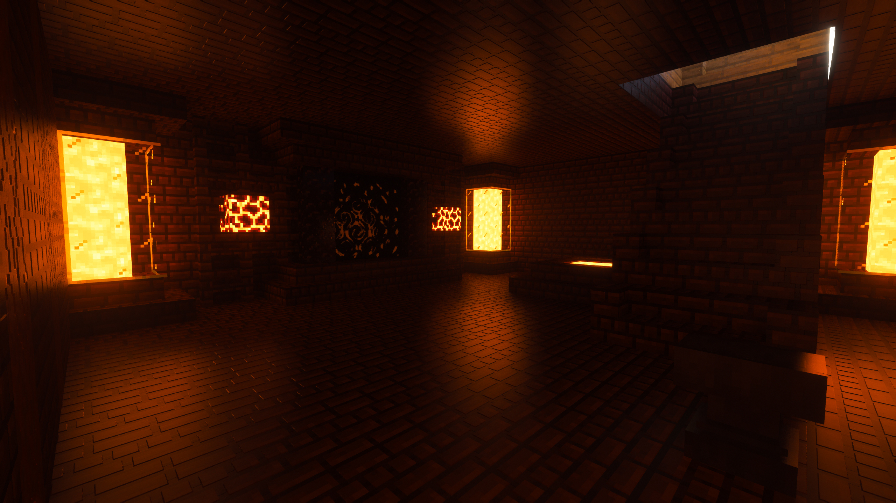
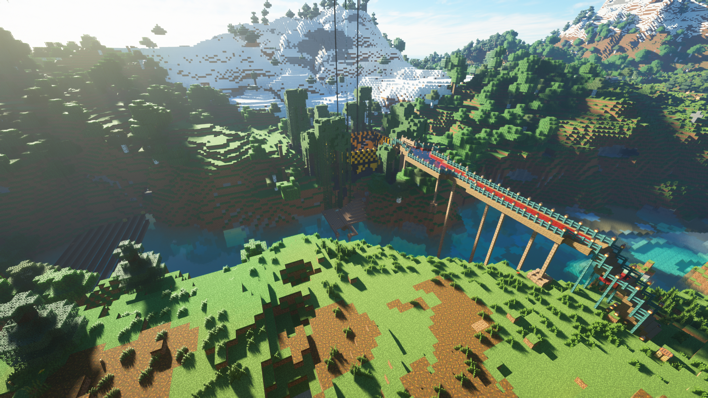
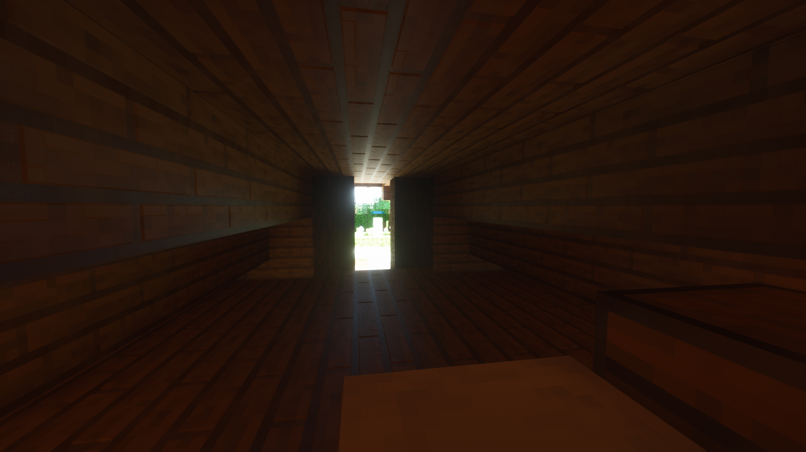
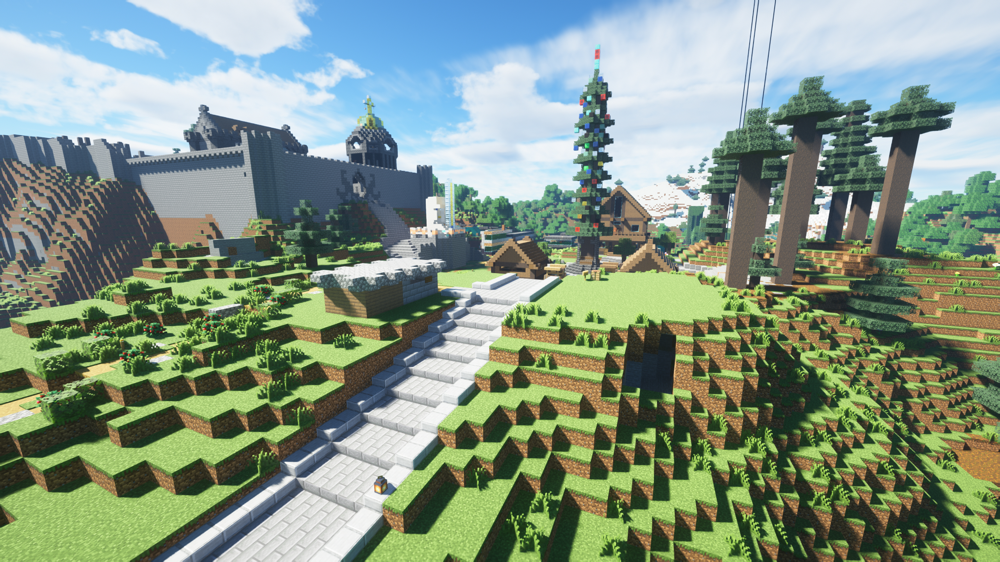
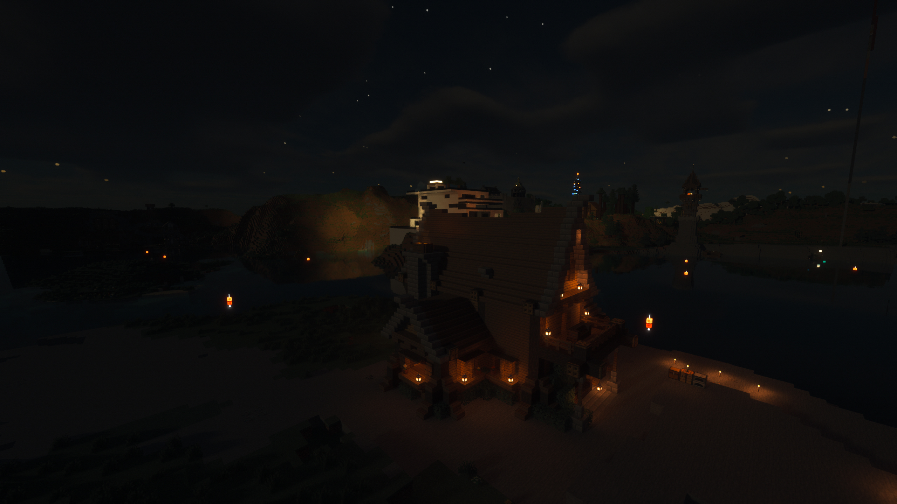

История сервера майнкрафт "ХЫСЬ" началась давным давно 20.06.2022 1:51 именно тогда был сгенерирован мир сервера. В то время мир распологался на
компьютере админа и все играли просто по лакальной сети. К сожалению много информации с того времяни утеренно и востоновить некоторые точные даты
не представляется возможным.
Игроки (на тот момент zaaye, Hesoyameii и Andruxa) вырыли свою первую шахту, она была максимально примитивной.
На тот момент игроки уже были в железной броне. Также был установлен столб мха, он служил ориентиром, чтобы игроки
знали куда двигатся со спавна. В итоге вышло, что игроки обосновались в другом направлении.
Этот столб мха и шахта до сих пор существуют.
Игрок Andruxa нашёл хорошую поляну и он вместе с остальными начали строить базу. Hesoyameii помогал с добычей
ресурсов, а конкретнее дерева. zaaye также добывал ресурсы, но не для постройки а для развития игроков, им была основана
вторая шахта, она была уже больших размеров. Andruxa строил первую постройку. Это был двух этажный деревянный дом с
чердаком в котором расположилась зачаровальня, и подвалом в котором был стилизованный портал. На первом этаже была гостинная,
а на втором распологались комнаты игроков. В дальнеёшем в этом доме будут поселятся новички и жить там до тех пор,
пока не создадут свою собственную базу. Вскоре был найден портал в энд и убит эндер дракон. Яицо распологалось также на
базе игроков.

После главной базы были построены фермы опыта, железа, пороха, трасника, моркови и золота
В качестве пищи на сервере решили использовать золотую морковь, так как она востанавливает больше всего
здоровья. Фермы пороха и железа были построены в море расположенном у баз игроков, это было сделано
для того чтобы поднять спаунрейт мобов, в итоге море прозвали "Море ферм".
К этому времяни мир уже был переведён на сервер. Отельная благодарность учителю админа по информатики
за предоставленный комрьютер.
Позже игроки устали жить в комнатках 3 на 4 блока, и решили построить собственные дома.
Игрок Andruxa взял территорию дальше по направлению от спавна к основной базе. Он решил построить дом в современном стиле.
Далее он также построил огромную автоматическую печку которой пользуются все игроки сервера. Hesoyameii Построил своё поселение
радом с остновной базой. Его дом это огромный замок с множеством других зданий. Игрок Zaaye построился ближе к спавну у подножья
горы, сложно описать в каком именно стиле выполнена его база.

Игроком Hesoyameii было улучшена главная база, добавленны новые постройки, облагарожена территория и
имногое другое. Также был построен спавн. А в честь нового года бла построена ёлка, в качестве украшений
выступили разные дорогие блоки такие как алмазный или золотой.


На сервер стали приходить новые игроки. SnusMage поселился с противоположного берега моря ферм, живёт он
в небольшём замке. KanycTa поселился вдоль реки после базы игрока zaaye, он живёт в красивом деревянном домике
на воде. Игрок FantomVudu посилился дальше за игроком KanycTa, он живёт в доме с небольшим поселеним на днревьях.
Игрок kto поселился пососедству с игроком Andruxa, он взял под свой контроль деревню.
Игрок Andruxa построил домик на берегу моря ферм. Изначально планировалось посилить в нём жителей для торговли,
но в итоге было принято решение, что тарговля с жителями будет реализована через энд. В этоже время игрок KanycTa
построил огромный маяк около главной базы, с выходом в море ферм.

Так как игроки уже серьёзно развились, пришла пора заниматся территорией сервера.
Во первых был создан проект морского сообщения между базами игроков. Он призван сделать
удобным перемещение по серверу. В итоге проекта был разработан регламент построение причалов
и навигационных буйков. Он стал первым законом сервера. На этом проект не закончился, так как
в дальнейшем обитаемая территория будет только расширятся, уже есть примерные планы развития.
Помимо этого игрок Andruxa придумал проект постройки огромного сооружения на которое нужно каласальное
количество ресурсов, например больше 40000 блоков камня. Данный проект стал толчком к созданию фермы булыжника
приносящей около 80000 блоков в час, и фермы шалкеров.